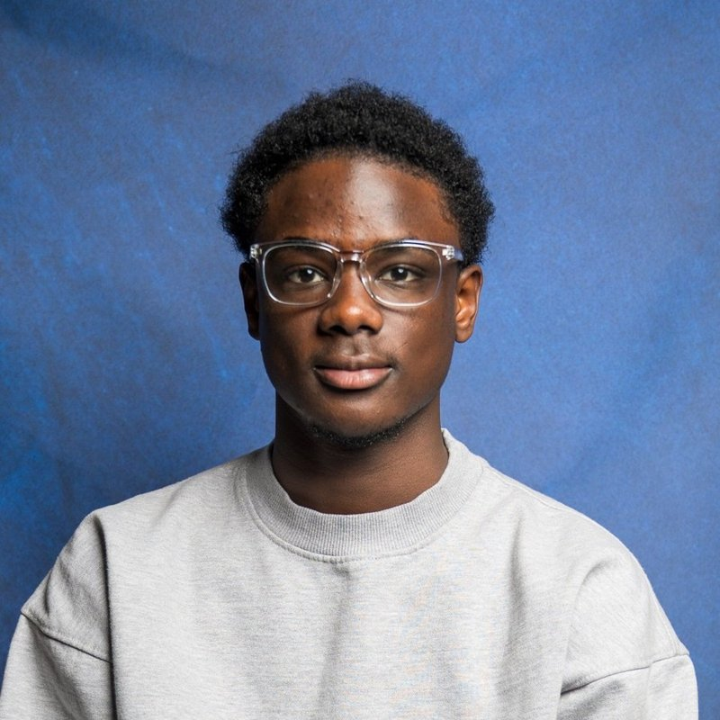
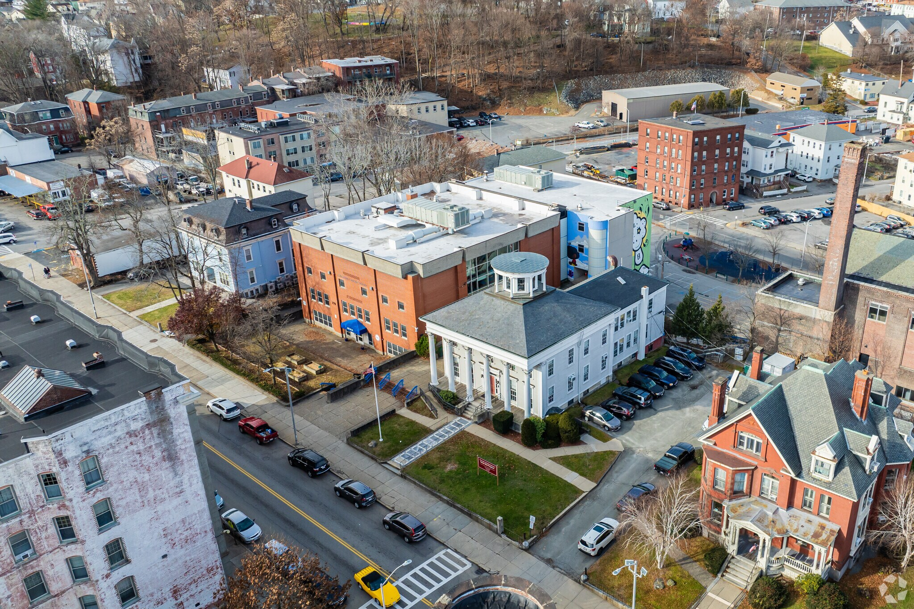
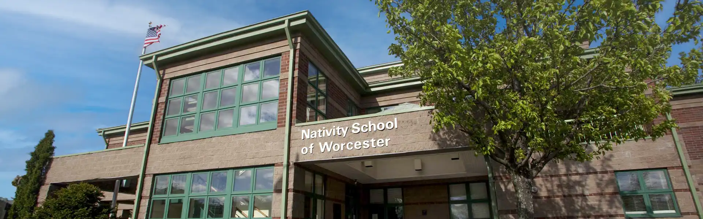
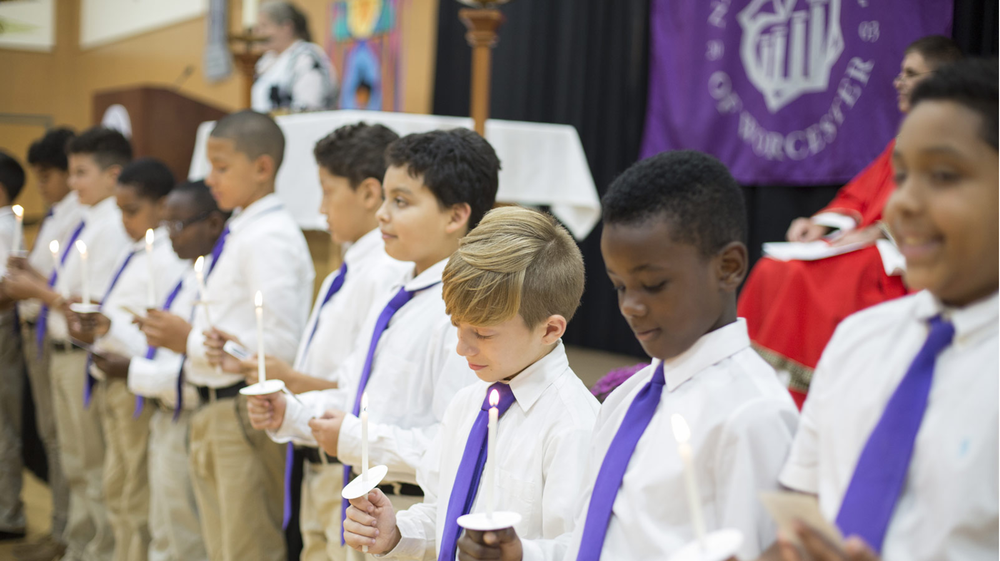
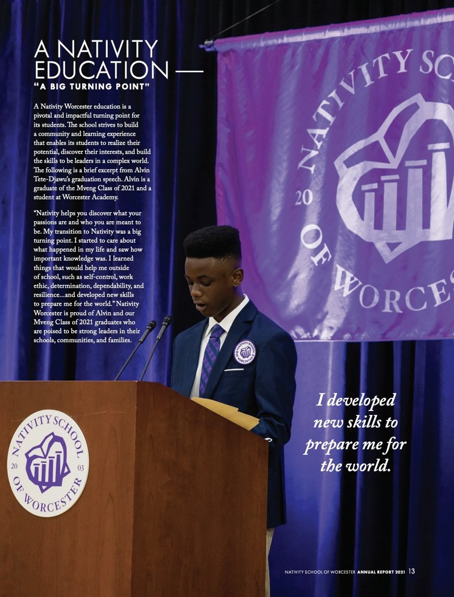
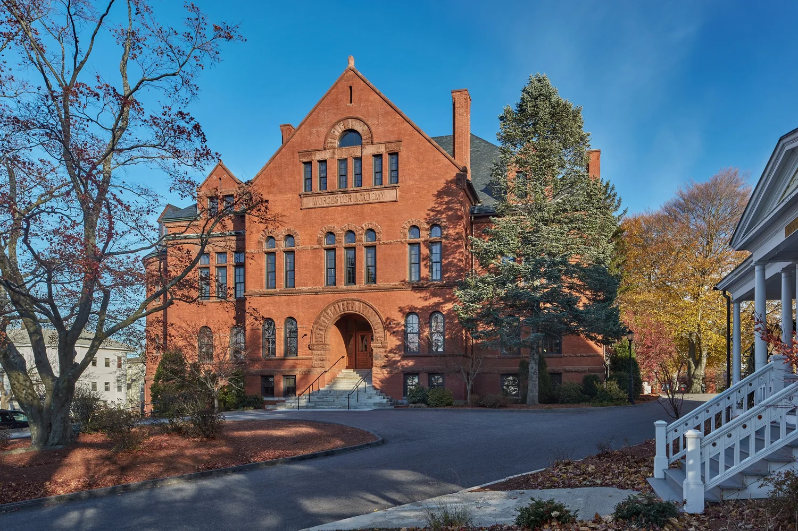
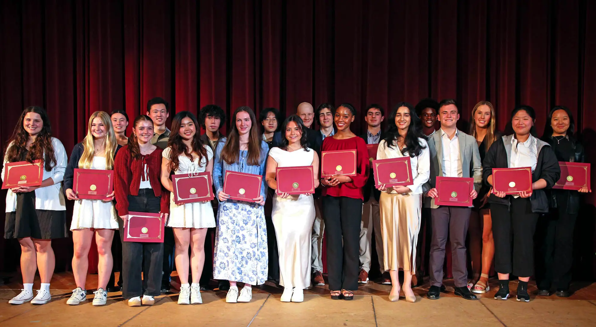
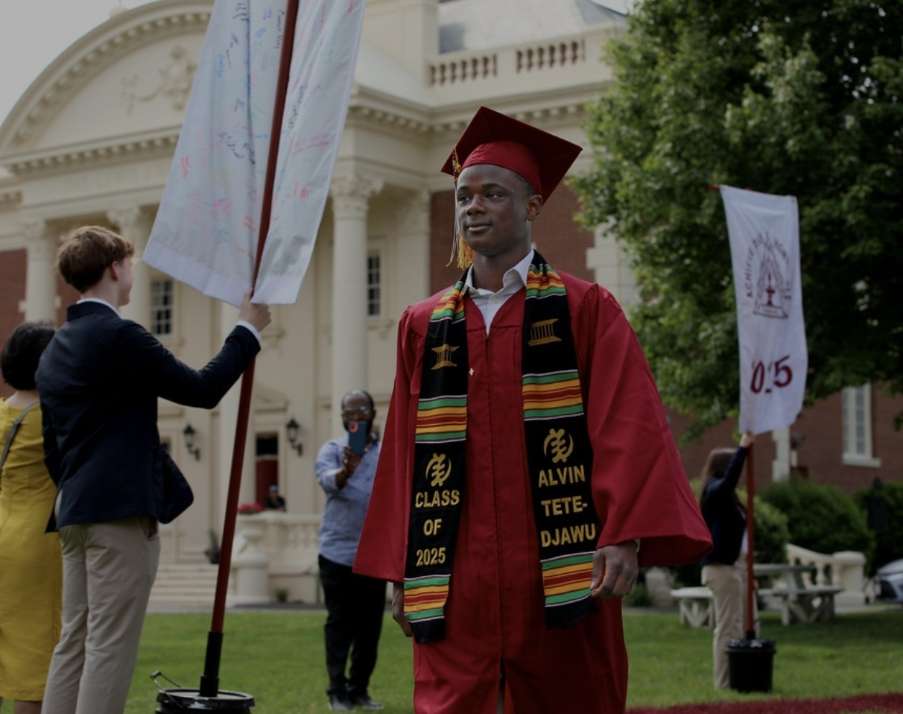
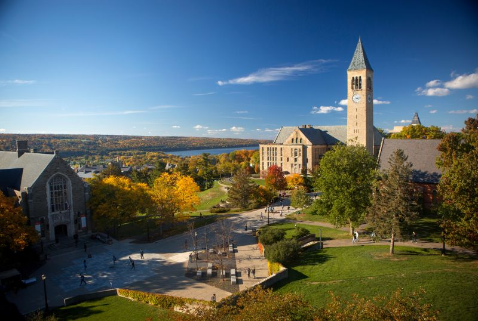

Product, operations, and strategy
Where technology, people, and strategy meet.
I am Alvin Tete-Djawu, and I'm honored to be the son of a Ghanaian immigrant single mother who came to the United States for a better life. She worked overnight shifts while building a catering business, and her sacrifices gave me and my two younger sisters dreams far bigger than the confines of our two-bedroom apartment.
This site puts a story behind the name and the face, because storytelling is the skill I rely on most. I wrote it so you can learn who I am, where I come from, and what I've built, without having to ask.
At Cornell University, I study Applied Economics and Management and Information Science, and I'm drawn to product, operations, and strategy. I scaled my family's food business 8x, presented recommendations to Fortune 50 executives, and built revenue operations models, and I want to make things that ease life for the people who use them.
The people closest to a problem are often the farthest from its solution, and I'm living proof that anyone can bridge the gap between their reality and the change they want to see in the world. This site is my story so far, and there's much more to write, so welcome.
Looking for product management and strategy internships, summer 2027.
- 8xrevenue growth at Pinch of Africa, $7K to $56K
- 70+event bookings, up from 17
- 294net-new accounts surfaced at OpenSesame
- 50+students mentored at a time
My Name
My name is Alvin Kwame Tete-Djawu. Kwame is a Ghanaian name, and my last name is said Teh-Teh Jiew. I'm happy to say it for you, and I carry all three parts everywhere I go.
I'm the oldest of three, and I'm the first person in my family to go to college. I keep both of those in mind in everything I do.
Where I Come From
Worcester, MA, or Mini-Ghana, as I call it, is home. By the grace of God, I traded the asphalt courts of Lincoln Village, where I shot my Wilson ball until I couldn't see the rim, for the lecture halls of an Ivy League school.
I don't despise humble beginnings, and I embrace them because they turned me into the resilient young man I am today. This city taught me to work hard, look out for the people around me, and keep going when things get tough. Where I grew up, bumpers are held together by duct tape and prayers, and people make what they have last.
My mom came to the United States from Ghana for a better life. She worked overnight shifts while she built Pinch of Africa, a Black-owned catering business, and I started working in it in August 2020. I cleaned, helped customers, took orders, and ran seasonal promotions. During the school year we serve in a community college dining hall, and in the summer we set up at festivals, where I grill kebabs and chicken.
Home also has a smell I carry with me. After a day of crayons and fooling around with my classmates in elementary school, I came home to my mom in the kitchen, making Kenkey, Tsofi, and Pepper with extra love and spice. To this day my favorites are Jollof, Waakye, and Fufu with soup.
I am Ghanaian, and it shows in everything I do, from the family food business to the documentary I made about my heritage to the lens I see life through.
When I was younger, I was embarrassed to be an immigrant's child, but I've grown to love my Ghanaian roots, and I've learned that hiding who you are means losing a part of yourself.
In high school, I snacked on Chin Chin, a Ghanaian pastry, during free periods, even after I was told it looked like dog food. My heritage is a part of where I come from, and it plays an even bigger part in where I'm headed.
Faith sits under all of it. Church is where my love of music started, where I learned to serve, and where I learned to show up when people count on me. I tell more of that story on the community page.
I've since moved, and I'm grateful for the friends and family back home who still pour into me and cheer me on.
Before the Ivy
Each of my three schools before Cornell pushed me in a different way, and together they prepared me for higher education and everything beyond.

Jacob Hiatt Magnet School
Jacob Hiatt Magnet School is where my school story starts, and it gave me my first taste of what a good school can do for a kid.
From kindergarten through elementary school, teachers who cared pushed me to strive for more and to care about something other than cartoons.
Outside of my appreciation for the art of four-square, I'm grateful that my Jacob Hiatt family pushed me to get involved in my community, love others, and be a star student, just like our motto said.

Nativity School of Worcester
I first noticed Nativity as a green roof off I-290, and I pushed to apply. School days there ran from 7:45 a.m. to 6:30 p.m., with study time in the evening, and as a fifth grader I felt the long hours and the formal dress code were too much for a 10-year-old. The discipline I built there became a driving force in my success and my hunger for more.
Every July brought the Summer of Service, three weeks given to community service. During my first one, my class repainted the back wall of an elementary school across from a playground, and while I smeared paint across the brick, the principal, who remembered me from my elementary days, caught me off guard with a hug.
In the fashion of a true Nativity man, I learned our pillars, including scholarship, service, and character, and I plan to carry those values for the rest of my life. Well after middle school ended, my Nativity brothers are still people I love and care about, and I will never forsake the Nativity community.

I was dubbed Big Al the day I guarded a student almost a foot taller than me in a basketball game, and I lost a student council election to an eighth grader as a fifth grader and was encouraged to keep going. By the end, I was the school's president. Moments like these taught me to push myself to the limit and work for what I didn't yet have.
I earned straight A's and made honor roll every quarter. Each year, Nativity sends one scholar on to Worcester Academy, and that scholar was me, with an academic scholarship.


Worcester Academy
Worcester Academy is where I learned the most about myself. I took eight AP courses, I was a captain on the basketball team, and I led the Black Student Union for two years, where I also presented for Black History Month.

On my first day, I was the only Black student in my grade, and I sat alone in the corner of Spanish II while my classmates chatted. For my first two years, I was the only Black male in my class. That evening, a classmate who noticed my basketball screensaver got me on the court, where I lost a one-on-one game to his crossovers.
Each day, my mom's 2003 Toyota RAV4 pulled through the gates behind a line of Teslas and BMWs. That contrast taught me to find my footing in environments not built with me in mind, and to keep growing no matter the setting.
In my junior year, my counselors asked me to mentor a Black middle schooler, and I mentored young men of color across the school as well. I also made a documentary for my senior project on how Ghanaian church music builds community.
From my trip to Denver for the SDLC to the hours I spent after school in Miss Thompson's office with a family I would eventually leave but never forget, I came out stronger.

Worcester Academy prepared me for life, and I walked out cum laude in 2025, ready for rooms I didn't choose and work I had to earn.

Cornell University

Now, at Cornell, I study Applied Economics and Management with a Business Analytics concentration and Information Science with a Data Science concentration.
After a year of applied economics, I wanted the hard skills to ideate and act on ideas as a creator, and information science gives me the technical skills to go alongside the theory that applied economics provides.
I had no experience when I added information science, so every class has been a chance to learn something new, and inexperience is only an opportunity to better equip yourself to change the future. I wrote the base of this site by hand in HTML, CSS, and JavaScript, and I'm teaching myself Python and Figma with AI tools.
Here, I'm a QuestBridge Scholar, a member of the FGLI cohort of the KKR Accelerator Scholars program, and I completed all three phases of Oliver Wyman's First-Year Immersion Program.
As a first-generation, low-income student, I know how much it helps when someone shows you the way, and that's why I try to do the same for others.
Outside of class, I keep busy. I'm an analyst with Cornell Consulting, I work in Cornell Athletics, and this past summer I was a resident advisor for the Pre-Collegiate Summer Scholars Program.
I'm also a co-founder and vice president of Sounds of Spirit, a Christian worship organization that brings the African diaspora together with rhythms from home and invites everyone to join us in praising God.
Relevant coursework
- Managerial Economics
- Game Theory
- Cost Analysis
- Statistics and Data Science
- Computing in Python
- Web Design and Programming
- Marketing
- Management Communication
- Finance
Campus involvements
- QuestBridge Scholar
- KKR Accelerator Scholars (FGLI Cohort)
- Adobe Student Ambassador
- Pre-Collegiate Summer Scholars Program Resident Advisor
- Sounds of Spirit Co-founder and Executive Board VP
- Ghanaian Students Association
- Oliver Wyman First-Year Immersion
A Few Things to Know
- Say my name
- Teh-Teh Jiew
- Roots
- Ghanaian, raised in Worcester, Massachusetts
- Languages
- English, Twi, and Spanish
- Favorite subject
- History
- Favorite reads
- The Bible, Things Fall Apart, and Can't Hurt Me
- Instruments
- Drums, piano, and bass guitar
- On repeat
- Joe Mettle, Victoria Orenze, and Onn Gospel
- Basketball
- Celtics fan, and I still shoot my Wilson ball until dark
- Favorite food
- Jollof, Waakye, and Fufu with soup
- Interests
- Architecture, web design, fashion, interior design, media, sports business, videography, and youth impact
What Comes Next
I consider myself a lifelong learner, and I'm thankful for my past experiences, but they will never be enough to satisfy me because there is always more in store.
At 13, I filled a notebook with song lyrics, including a song called Wonder Worker, and a half-written plan to fix men's hair care, a problem I kept meeting in the aisles of Target. I never finished that plan, but I never lost the habit of spotting what's missing and wanting to build it, and that habit is what draws me to product management and strategy.
Lately I'm curious about how AI changes the way small and family businesses compete. I grew up inside one, and I'd like to help build tools that give people like my mom time back.
Right now, I'm looking for product management and strategy internships where I can work across teams to decide what gets built and why, and the work on the next page shows how I've done that so far.
See My Work and Impact